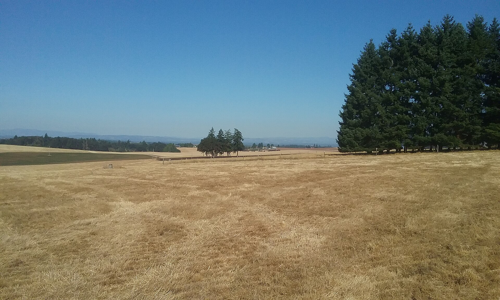
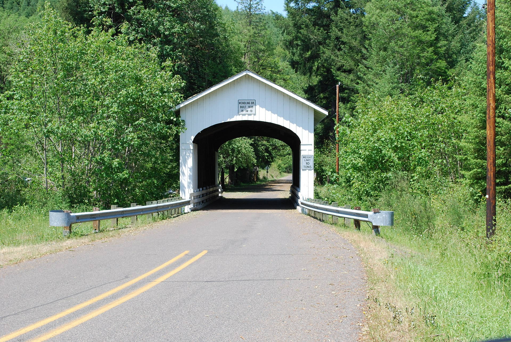

Rural homes, acreage, and timber parcels. Well and septic throughout. Forest zoning and forest deferral are routine considerations here, and the diligence list is the full rural one.
Then there is the rural & acreage side of it. Past the city limits the rules change. Your water comes from a well, your waste goes to a septic system, your zoning decides what you can build, and your lender may have opinions about all three. None of it is complicated once someone explains it. All of it is expensive to learn the hard way.
Generic advice is worthless on a decision this size. This is what rural & acreage actually involves in Marcola, as opposed to anywhere else in the county.
Assume private well and on-site septic unless you are told otherwise. That means the well log, the depth and flow rate, a current water test, and the county septic permit record all belong on your list before contingencies come off. Oregon also requires a seller to test a domestic well for arsenic, nitrates, and total coliform once an offer is accepted, so ask for those results. Septic permits for this area are held by Lane County, and the permitted capacity is tied to bedroom count, which matters if you plan to add on later.
Zoning does more work here than acreage does. Farm and forest zones in Lane County exist to keep working land working, and they put real limits on new dwellings, second homes for family, and some business uses. A dwelling right is verified through a land use application, not inferred from how many acres are on the listing. If your plan involves building anything, get the answer from Lane County planning in writing before your contingencies expire. Forest and farm zoning with real dwelling limits.
Water is part of the appeal here and part of the diligence. Check the FEMA maps for any parcel near a river, creek, or reservoir, because floodplain status affects insurance cost and sometimes what you can build. On the Corps reservoirs, levels are managed seasonally and drawn down for flood storage, so the shoreline you see in June is not the shoreline in October. If a water view or water access is part of why you want the property, look at it in two different seasons.
Wildfire risk affects insurance availability and price in this part of the county, and it is the item most likely to surprise a buyer late. Get a written quote during your inspection period rather than assuming coverage will be routine. It is also worth asking about defensible space around the structures, since it affects both your premium and your risk.
This is genuinely rural property, not a subdivision with a view. You take on your own water and waste, longer drives for everything, and weather that occasionally takes the power out. In exchange you get room, quiet, and neighbors who show up with equipment when you need it. Most people who move out here would not go back. The ones who struggle are almost always the ones nobody told in advance.
Marcola sits at the top of the Mohawk Valley, a timber community that has kept its own school district and its own identity. The Wendling covered bridge is out this way. So is a lot of forest ground and a pace of life that is genuinely different from the metro twenty-some miles south.
| ZIP codes | 97454 |
| Known for | Wendling Covered Bridge · Mohawk River · Marcola School District · Surrounding timberland |
| Schools | Marcola School District serves the community. |
| Getting to town | A real drive to Springfield |

You want someone who combines real rural & acreage experience with parcel-level knowledge of Marcola. Brett Herring works Marcola as part of his core Lane County territory with The Operative Group at Real Broker, LLC, and lives in Springfield. Call or text 541-968-9422 for a straight local conversation with no pressure attached.
Rural homes, acreage, and timber parcels. Well and septic throughout. Forest zoning and forest deferral are routine considerations here, and the diligence list is the full rural one.
The well log, the depth and flow rate, a current water quality test, and whether the well is shared with a neighbor. Shared wells come with agreements that need reading. All of this is checkable during your inspection period.
Pull the county permit records, get a septic inspection, and ask for pumping history. You want to know the system type, drainfield location and condition, and whether the capacity matches your plans for the house.
Depends entirely on your zoning, and in Oregon farm and forest zones the answer is frequently no or only with specific approvals. This is worth confirming with Lane County planning before you buy land counting on it.
Buying your first place, selling acreage out east, or landing here from out of state — start with a conversation. No pressure, no script, no disappearing act.
541-968-9422